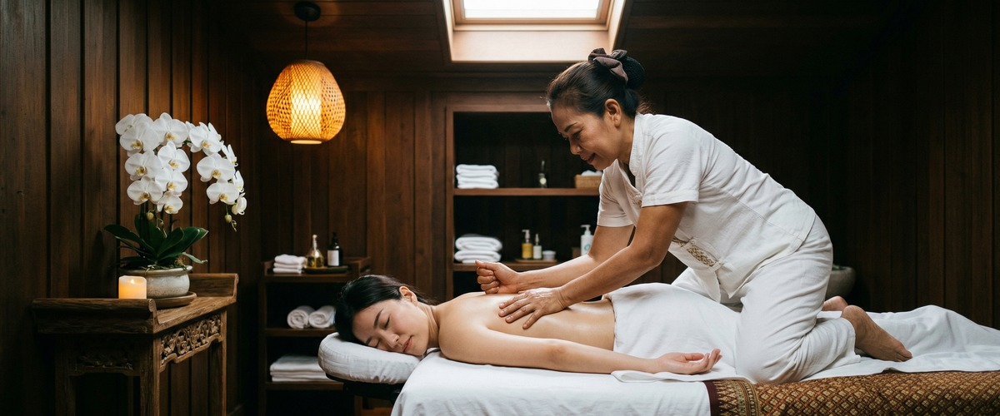
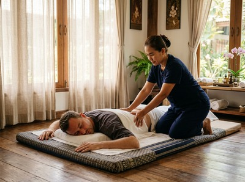

That familiar ache between your shoulder blades, the stubborn tightness in your neck that won't shift no matter how many times you roll it, the tender spot in your upper back that seems to worsen by the end of every working week: these are muscle knots, and they affect almost everyone at some point.

If you're looking for a way to remove knots and relax tight muscles, targeted massage therapy is one of the most effective approaches available.
Muscle knots are medically known as myofascial trigger points. They are small, sensitive spots where muscle fibres lock into a sustained contraction. This cuts off blood flow and causes waste products to build up in the tissue.

The result is pain, stiffness, and tenderness that can spread to nearby areas. Common sites include the upper trapezius, neck, upper back, and lower back.
Poor posture, repetitive movement, prolonged sitting, and stress are all known causes.
Massage works on knots in several ways at once. Direct pressure on a trigger point breaks the contraction cycle in the affected fibres. At the same time, blood flow increases — delivering oxygen and nutrients while clearing out the waste that keeps tension alive.
According to Medical News Today's clinical overview of myofascial trigger points, massage is one of the most widely recommended ways to release knots and restore normal muscle function.
Sports massage uses deep, targeted pressure along specific muscle groups. It breaks down adhesions and treats acute trigger points. Swedish massage uses longer strokes and graduated pressure to improve circulation across broader areas of tension.
Traditional Thai massage adds assisted stretching. This lengthens the muscle fibres and restores range of motion in the joints around them. At Serendipity, all of these approaches are available. Your therapist will choose the best technique based on where your tension sits and how your body responds.
Hot stone massage is another strong option for deeply held tension. Heat from basalt stones opens blood vessels and softens resistant muscle tissue before hands-on work begins. This lets pressure reach deeper with less discomfort.
At Serendipity, based at Central Chambers on Hope Street in Glasgow City Centre, your session begins with a brief conversation about where you're holding tension and what you want to achieve. There's no guesswork. Your therapist will work through the affected areas with firm, purposeful pressure — effective without tipping into unnecessary discomfort.
For muscle knots, you can book a sports massage session to target specific problem areas with precision. Or opt for a Thai oil massage if you're carrying tension more broadly across your back and shoulders.
Our therapists are trained in techniques developed by head therapist Jariya Malone. They know how to read what the tissue needs rather than applying a fixed formula. Most clients notice a clear reduction in tightness by the end of a single session. Persistent knots often benefit from two or three appointments, spaced a week apart.
Anyone carrying persistent muscle tension will benefit, but some groups are especially prone to developing knots. Office workers who sit for eight or more hours a day — especially those using laptops or multi-screen setups — build up chronic tension in the neck, upper back, and shoulders.
Runners, gym-goers, and those training for events often develop knots in the glutes, calves, and quadriceps from repeated loading without enough recovery time. Tradespeople working overhead or in awkward positions, new parents lifting young children, and anyone under sustained stress are equally at risk.
If any of this sounds like your daily life, you can arrange a session at Serendipity and start addressing the tension before it becomes a longer-term problem.
A muscle knot is a myofascial trigger point: a small area of muscle fibre held in a sustained, involuntary contraction. This cuts off local blood flow, causes waste products to build up, and leads to pain, stiffness, and tenderness.
Knots can form in almost any muscle but are most common in the neck, upper back, and shoulders.
Massage can release active knots effectively. But if the root cause — poor posture, prolonged sitting, or repetitive strain — is not addressed, new knots are likely to return.
Regular sessions help reduce how often they form and how severe they become. Many clients find that combining massage with postural awareness and stretching gives the longest-lasting results.
Some discomfort when pressure is applied to a trigger point is normal. Most people describe it as a productive ache rather than sharp pain. A good therapist will work within your tolerance and adjust pressure as the muscle releases.
The discomfort should ease during the session. The area often feels noticeably looser within 24 to 48 hours.
Sports massage and deep-pressure Thai massage are both highly effective for targeting specific trigger points. Swedish massage is a better fit if tension is more widespread and you want a mix of relaxation and muscle release.
Hot stone massage works well for deeply held, chronic tightness. Your therapist at Serendipity will advise on the best option once you've discussed where you're carrying tension.
A single session can bring significant relief for many people, especially for recently formed knots. Long-standing tension or multiple trigger points often responds better to two or three sessions spaced a week apart.
Your therapist will give you a clearer picture after your first appointment, based on how the tissue responds.
Yes. When you book your treatment online, you can note the areas giving you the most trouble. Sports massage is the most targeted option for knot release, while Thai oil massage covers broader areas of tension.
Your therapist will tailor the session to your specific needs from the moment you arrive.